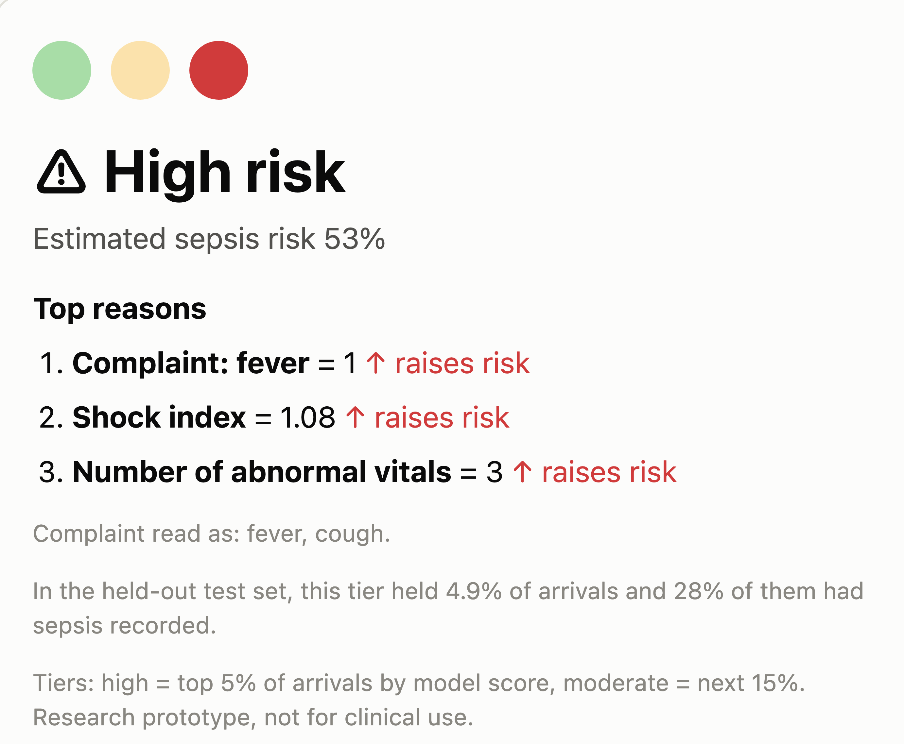

Abstract
Can triage data alone flag sepsis? On 409,216 adult ED visits (MIMIC-IV-ED), XGBoost ranked risk in unseen patients with AUROC 0.925 and, at equal workload, found more cases than SIRS, qSOFA, NEWS or nurse acuity, with three reasons for every flag.
1.Background
Sepsis is linked to one in five deaths worldwide [1]. Patients who look stable at triage can deteriorate in a crowded waiting room. NSW Health’s SAFE-WAIT trial (Western Sydney, from 2027) shows the problem matters here.
2.Objectives
- Rank risk in patients the model has never seen
- Beat SIRS, qSOFA, NEWS and nurse acuity at equal workload
- Give a calibrated low / moderate / high tier
- Show the reasons behind each flag
- Check performance across patient groups
3.Methodology
Fig. 1. Pipeline. Only information known at triage enters the model.
4.System Architecture
Fig. 2. Prototype: an offline web app that scores one patient with the trained model.
Key Technologies
5.Results
Fig. 3. At the same number of alerts, the model found more sepsis cases (per 100) than every rule. Difference in points, 95% CI. Test set: 61,690 visits, 1,508 cases.
TABLE IRanking performance on the test set (sepsis rate 2.4%)
| Method | AUROC (95% CI) | AUPRC |
|---|---|---|
| XGBoost | 0.925 (0.919–0.932) | 0.360 |
| Logistic regression | 0.919 (0.912–0.926) | 0.338 |
| Random forest | 0.917 (0.910–0.924) | 0.332 |
| NEWS (triage) | 0.807 (0.795–0.819) | 0.148 |
| Nurse acuity | 0.710 (0.697–0.722) | 0.057 |
| SIRS (triage) | 0.709 (0.695–0.721) | 0.065 |
| qSOFA (triage) | 0.667 (0.655–0.680) | 0.076 |
AUROC; bars start at 0.5 (chance)
Fig. 4. Context beyond vital signs lifts AUROC by 0.039; the nurse’s acuity score adds almost nothing (+0.001).
6.Traffic-Light Risk Tiers
| Tier | Arrivals | Had sepsis | Predicted |
|---|---|---|---|
| High | 4.9% | 28 in 100 | 28 in 100 |
| Moderate | 15.0% | 5.2 in 100 | 4.9 in 100 |
| Low | 80.2% | 0.4 in 100 | 0.5 in 100 |
Fig. 5. The red tier is 5% of arrivals but holds 56% of sepsis cases, and predicted risk matches what happened (calibration slope 1.02).
⚠ Research prototype, not for clinical use7.What Drives the Risk
Fig. 6. Top drivers by mean |SHAP|. They are clinically recognisable, and the ranking agreed with permutation importance (ρ = 0.76).
8.Demonstration

Fig. 7. Prototype output for an invented patient: 78-year-old by ambulance with fever and cough, temperature 38.6 °C, heart rate 112, blood pressure 104/62. Every flag shows its top three reasons.
9.Who It Works For
Fig. 8. Share of sepsis cases put in the red tier. Ranking held in all 20 groups (AUROC 0.89–0.94), but young adults and walk-ins, where sepsis is rarer, are flagged less often.
10.Conclusions
- Triage data alone found twice as many sepsis cases as SIRS at the same workload.
- Logistic regression came within 0.006 AUROC: a transparent model is nearly as good.
- Sepsis-3 check: against a clinical definition, the model still beat every rule (AUROC 0.85 vs 0.59–0.68).
- Limits: one US hospital, retrospective; sepsis defined by diagnosis codes.
- Next: ethics approval, de-identified NSW data, and an equity audit including Aboriginal and Torres Strait Islander patients.